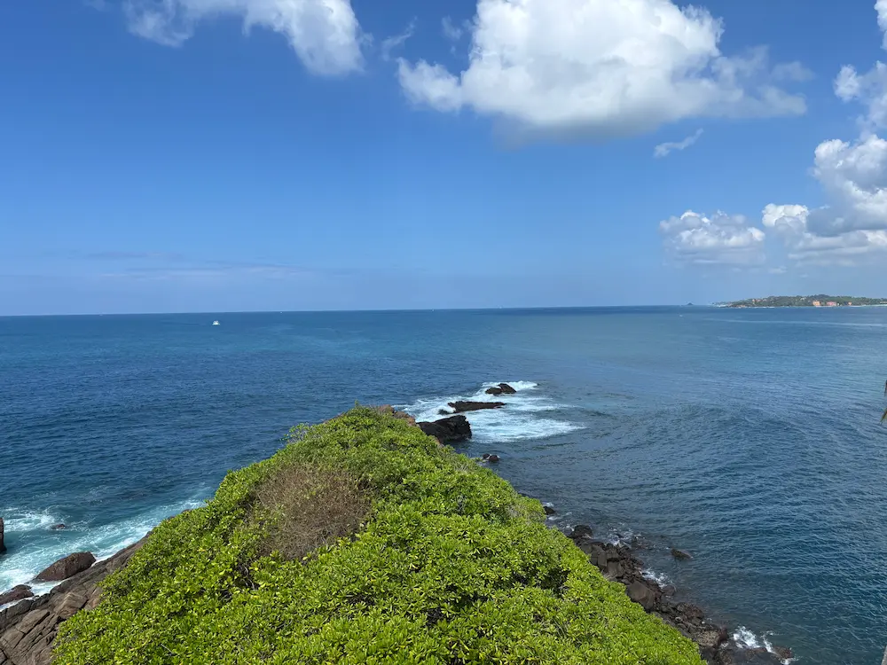

Travel Tips
Find useful travel tips and advice to make the most of your visit to Sri Lanka.
Money and Currency
The local currency is the Sri Lankan Rupee (LKR). Cards are commonly accepted at hotels and larger restaurants, but carrying some cash is helpful for markets, smaller businesses and rural areas.
Local Customs and Etiquette
Respect local customs and traditions. Dress modestly when visiting religious sites and always ask for permission before taking photographs of people. Light, breathable clothing is ideal for Sri Lanka's warm climate. When visiting temples and other religious sites, wear modest clothing that covers your shoulders and knees.
Getting Around
Public transportation is available, but renting a car or using ride-hailing services can be more convenient for exploring remote areas.
Weather and Climate
Sri Lanka has a tropical climate with distinct wet and dry seasons. Check the weather forecast and pack accordingly.
Check Entry Requirements
Ensure you have the necessary visas and travel documents before your trip. Check for any travel advisories or health requirements.